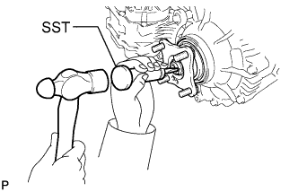
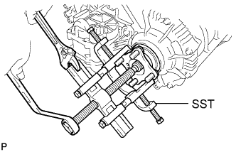
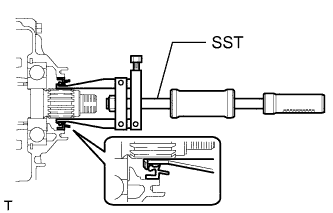

TRANSFER CASE REAR OIL SEAL > REPLACEMENT |
| 1. REMOVE PROPELLER SHAFT ASSEMBLY |
Remove the propeller shaft assembly (Click here).
| 2. REMOVE REAR OUTPUT SHAFT COMPANION FLANGE SUB-ASSEMBLY |
 |
Using SST and a hammer, release the staked part of the nut.
 |
Using SST to hold the companion flange, remove the lock nut.
 |
Using SST, remove the companion flange.
Remove the O-ring from the companion flange.
| 3. REMOVE TRANSFER CASE REAR OIL SEAL |
 |
Using SST, tap out the oil seal.
| 4. INSTALL TRANSFER CASE REAR OIL SEAL |
Apply transfer oil to the spline of the output shaft.
 |
Using SST and a hammer, tap in a new oil seal until its surface is flush with the housing upper surface.
| 5. INSTALL REAR OUTPUT SHAFT COMPANION FLANGE SUB-ASSEMBLY |
Install the companion flange onto the output shaft.
|
Using SST to hold the companion flange, install a new O-ring and a new companion flange lock nut.
 |
Using a chisel and hammer, stake the companion flange lock nut.
| 6. INSTALL PROPELLER SHAFT ASSEMBLY |
Install the propeller shaft assembly (Click here).